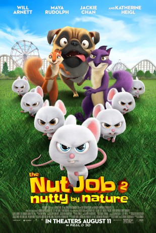

#10654 Operation: Nussknacker 2 - Voll auf die Nüsse
 gesehen am 15.02.2019
gesehen am 15.02.2019
 
 IMDB-Wertung: 5.4 / 10
IMDB-Wertung: 5.4 / 10  Metascore: 36
Metascore: 36 
Surly and his friends, Buddy, Andie, and Precious, discover that the mayor of Oakton City is cracking one big hustle to build a giant amusement park, which in turn will bulldoze their home. The animals must stop the mayor, his daughter, and a mad animal control officer in order to take back the city park.
Jahr: 2017
Dauer: 90 Minuten
FSK: 6
Land: Süd-Korea Studio: Diamond FilmsTonspuren:
Untertitel: Deutsch,
Auflösung: 1080p (1912x1032) Größe: 5744 MB
Genre: Action, Komödie, Abenteuer, Fantasy, Animation/Trick, Familie
Regisseur: Cal Brunker
Drehbuch: Scott Bindley, Cal Brunker, Bob Barlen, Peter Lepeniotis
Soundtrack: Heitor Pereira
Darsteller:
Datei: X:\Kinder Collections\Operation Nussknacker\Operation Nussknacker 2 - Voll auf die Nüsse (2017, FSK6, 1912x1032).mkv seit 15.02.2019
Festplatte: Kinder-Filme+Trick
 Alle Filme aus Gruppe 'Kinder Collections\Operation Nussknacker'
Alle Filme aus Gruppe 'Kinder Collections\Operation Nussknacker'